第 15 章
轮廓的检测与匹配
本章共 6 个小节 · findContours · drawContours · hierarchy · moments · Hu 矩 · 形状匹配
边缘检测取得的边缘线有时并不连续。轮廓检测则进一步分析影像中可能的形状，定位形状并取得其特征，
例如质心、面积、周长和边界框。这些资料可用于后续的影像识别与形状匹配。
15-1
影像内图形的轮廓
轮廓是影像内图形或外形的边缘线条。使用 findContours() 找轮廓前，通常需要先把彩色影像转为灰阶，
再做阈值处理得到黑白二值影像；也可以理解为在黑色影像中寻找白色物体。
15-1-1 找寻图形轮廓 findContours()
contours, hierarchy = cv2.findContours(image, mode, method)
| 参数 / 返回值 | 说明 |
|---|
contours | 影像中找到的所有轮廓。资料类型是列表，列表元素是各轮廓的像素点坐标数组。 |
hierarchy | 轮廓之间的层次关系。 |
image | 8 位单通道影像。若来源是彩色影像，需要先转灰阶并二值化。 |
mode | 轮廓检测模式，例如 RETR_EXTERNAL、RETR_LIST、RETR_CCOMP、RETR_TREE。 |
method | 轮廓近似方法，例如 CHAIN_APPROX_NONE、CHAIN_APPROX_SIMPLE、CHAIN_APPROX_TC89_L1。 |
15-1-2 绘制图形的轮廓 drawContours()
image = cv2.drawContours(src_image, contours, contourIdx, color, thickness, lineType, hierarchy, maxLevel, offset)
| 参数 | 说明 |
|---|
src_image | 要绘制轮廓的目标影像。函数会直接修改这张影像。 |
contours | findContours() 得到的轮廓列表。 |
contourIdx | 要绘制的轮廓索引；设为 -1 表示绘制所有轮廓。 |
color | BGR 格式轮廓颜色。 |
thickness | 线条粗细；设为 -1 表示填满轮廓。 |
hierarchy | 可选，轮廓层次资料。 |
maxLevel | 可选，绘制的轮廓层次深度。 |
offset | 可选，绘制轮廓时的偏移量。 |
15-2
绘制影像内图形轮廓的系列实例
本节从简单二值图开始，逐步演示找轮廓、绘制轮廓、列出轮廓属性、只检测外部轮廓、检测所有轮廓，
以及在一般照片中绘制轮廓或使用遮罩取出目标。
程序实例 ch15_1.py：在 easy.jpg 中找外部轮廓并以绿色绘制
# ch15_1.py
import cv2
src = cv2.imread("easy.jpg")
cv2.imshow("src", src)
src_gray = cv2.cvtColor(src, cv2.COLOR_BGR2GRAY)
ret, dst_binary = cv2.threshold(src_gray, 127, 255, cv2.THRESH_BINARY)
contours, hierarchy = cv2.findContours(
dst_binary,
cv2.RETR_EXTERNAL,
cv2.CHAIN_APPROX_SIMPLE
)
dst = cv2.drawContours(src, contours, -1, (0, 255, 0), 5)
cv2.imshow("result", dst)
cv2.waitKey(0)
cv2.destroyAllWindows()
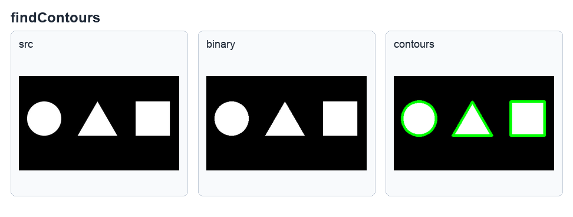
使用 RETR_EXTERNAL 只检测外部轮廓，参考原书第 15-5 页。
程序实例 ch15_1-1.py：再次显示 src，观察 drawContours() 是否影响原始影像
# ch15_1-1.py
# 与 ch15_1.py 相同，但在绘制后再显示一次 src。
dst = cv2.drawContours(src, contours, -1, (0, 255, 0), 5)
cv2.imshow("result", dst)
cv2.imshow("src1", src)
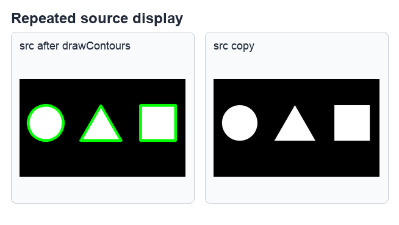
drawContours() 执行后，等号左侧结果与原 src 内容都会显示轮廓，参考原书第 15-6 页。
程序实例 ch15_2.py / ch15_3.py / ch15_4.py：查看 contours 的类型、数量与各轮廓属性
# ch15_2.py
print(f"资料类型 = {type(contours)}")
print(f"轮廓数量 = {len(contours)}")
# ch15_3.py
n = len(contours)
imgList = []
for i in range(n):
img = np.zeros(src.shape, np.uint8)
imgList.append(img)
imgList[i] = cv2.drawContours(imgList[i], contours, i, (255, 255, 255), 5)
cv2.imshow("contours" + str(i), imgList[i])
# ch15_4.py
for i in range(len(contours)):
print(f"contours[{i}].shape = {contours[i].shape}")
这组实例的重点是观察 contours 的资料类型、轮廓数量，并用索引逐一绘制轮廓。
若只需要表现程序输出，使用文字和代码块即可；这里不使用截图，避免把 hierarchy 章节的截图误放到本节。
程序实例 ch15_6.py / ch15_7.py：外部轮廓与所有轮廓
# ch15_6.py
src = cv2.imread("easy1.jpg")
contours, hierarchy = cv2.findContours(
dst_binary,
cv2.RETR_EXTERNAL,
cv2.CHAIN_APPROX_SIMPLE
)
# ch15_7.py
# 若要检测所有轮廓，将检测模式改为 RETR_LIST。
contours, hierarchy = cv2.findContours(
dst_binary,
cv2.RETR_LIST,
cv2.CHAIN_APPROX_SIMPLE
)
程序实例 ch15_8.py / ch15_9.py / ch15_10.py：绘制一般影像轮廓与目标取出
# ch15_8.py
src = cv2.imread("lake.jpg")
src_gray = cv2.cvtColor(src, cv2.COLOR_BGR2GRAY)
ret, dst_binary = cv2.threshold(src_gray, 150, 255, cv2.THRESH_BINARY)
cv2.imshow("binary", dst_binary)
contours, hierarchy = cv2.findContours(dst_binary, cv2.RETR_LIST, cv2.CHAIN_APPROX_SIMPLE)
dst = cv2.drawContours(src, contours, -1, (0, 255, 0), 2)
cv2.imshow("result", dst)
# ch15_9.py
# 使用白色实心轮廓建立遮罩，可视为取出图案。
mask = np.zeros(src.shape[:2], np.uint8)
dst = cv2.drawContours(mask, contours, -1, 255, -1)
dst_result = cv2.bitwise_and(src, src, mask=dst)
# ch15_10.py
# 保留天空背景，但将灯塔以黑色显示。
mask = np.ones(src.shape[:2], np.uint8) * 255
dst = cv2.drawContours(mask, contours, -1, 0, -1)
dst_result = cv2.bitwise_and(src, src, mask=dst)
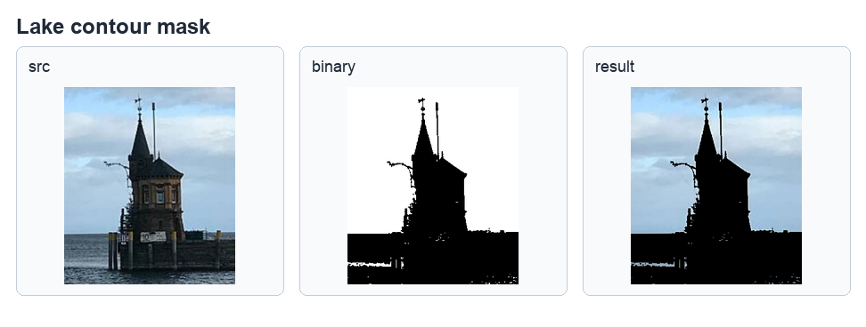
这张截图对应 ch15_8.py：显示原始影像、二值影像与绿色轮廓结果；后续实例再用遮罩清除背景或保留背景，参考原书第 15-10 至 15-13 页。
15-3
认识轮廓层级 hierarchy
hierarchy 用来定义轮廓之间的层级关系。每个轮廓对应一个含 4 个元素的数组：
[Next, Previous, First_Child, Parent]，分别代表同层下一个轮廓、同层前一个轮廓、第一个子轮廓、父轮廓。
| 检测模式 | 层级行为 |
|---|
RETR_EXTERNAL | 只检测外部轮廓。 |
RETR_LIST | 检测所有轮廓，但不建立层级关系。 |
RETR_CCOMP | 检测所有轮廓，同时建立两个层级关系。 |
RETR_TREE | 检测所有轮廓，同时建立完整树状层级关系。 |
程序实例 ch15_11.py / ch15_12.py / ch15_13.py / ch15_14.py：不同检测模式的 hierarchy
# ch15_11.py
src = cv2.imread("easy2.jpg")
contours, hierarchy = cv2.findContours(
dst_binary,
cv2.RETR_EXTERNAL,
cv2.CHAIN_APPROX_SIMPLE
)
print(f"hierarchy 资料类型：{type(hierarchy)}")
print(f"列印层级 \n {hierarchy}")
# ch15_12.py
contours, hierarchy = cv2.findContours(dst_binary, cv2.RETR_LIST, cv2.CHAIN_APPROX_SIMPLE)
# ch15_13.py
src = cv2.imread("easy3.jpg")
contours, hierarchy = cv2.findContours(dst_binary, cv2.RETR_CCOMP, cv2.CHAIN_APPROX_SIMPLE)
# ch15_14.py
contours, hierarchy = cv2.findContours(dst_binary, cv2.RETR_TREE, cv2.CHAIN_APPROX_SIMPLE)
hierarchy 资料类型：<class 'numpy.ndarray'>
列印层级
[[[ 1 -1 -1 -1]
[-1 0 -1 -1]]]
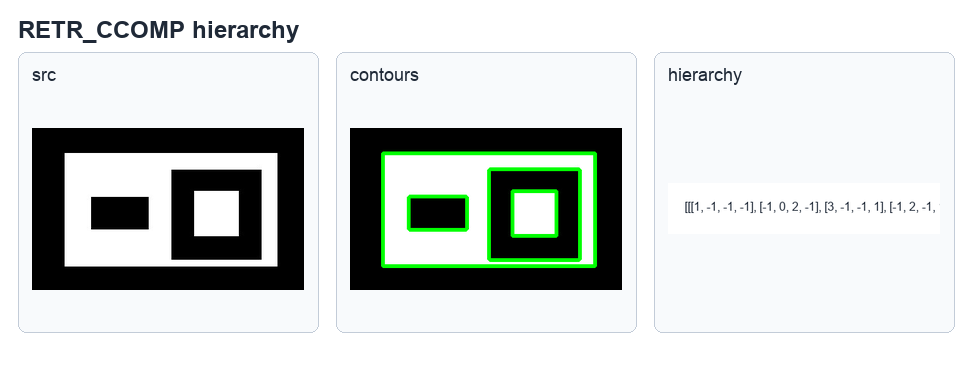
ch15_11.py 使用 RETR_EXTERNAL，两个外部轮廓都没有父轮廓或子轮廓。
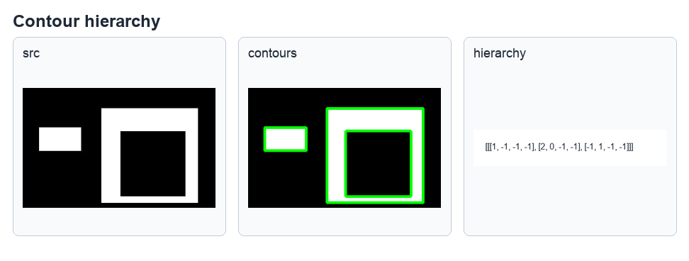
ch15_13.py 的 RETR_CCOMP 输出呈现外层与内层轮廓的两层关系，参考原书第 15-18 至 15-22 页。
15-4
轮廓的特征：影像矩（Image moments）
轮廓的特征包括质心、面积、周长、边界框等。影像矩是一组统计参数，可记录像素所在位置与强度分布，
常用于比较轮廓与模式识别。
m = cv2.moments(array, binaryImage)
基础影像矩可推导轮廓质心。若 m00 是零阶矩，则质心坐标为：
cx = m10 / m00
cy = m01 / m00
程序实例 ch15_15.py / ch15_16.py：列印影像矩并绘制质心
# ch15_15.py
for i in range(len(contours)):
M = cv2.moments(contours[i])
print(f"轮廓面积 str({i}) = {M['m00']}")
print(f"影像矩 str({i}) = \n{M}")
# ch15_16.py
dst = cv2.drawContours(src, contours, -1, (0, 255, 0), 5)
for c in contours:
M = cv2.moments(c)
cx = int(M["m10"] / M["m00"])
cy = int(M["m01"] / M["m00"])
cv2.circle(dst, (cx, cy), 5, (255, 0, 0), -1)
cv2.imshow("result", dst)
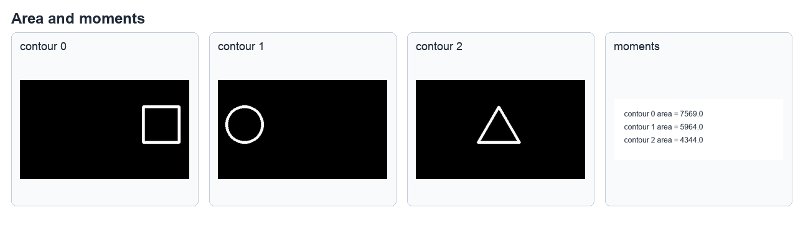
ch15_15.py 逐一列印轮廓面积与影像矩，输出内容较长，保留截图的换行结构。
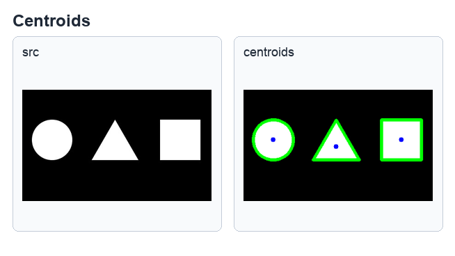
ch15_16.py 使用 m10 / m00 与 m01 / m00 计算质心，并在每个轮廓中心绘制蓝点。
OpenCV 也提供 contourArea() 与 arcLength()，分别用于计算轮廓面积和轮廓周长。
area = cv2.contourArea(contour, oriented)
length = cv2.arcLength(contour, closed)
程序实例 ch15_17.py / ch15_18.py：计算轮廓面积与周长
# ch15_17.py
for i in range(len(contours)):
area = cv2.contourArea(contours[i])
print(f"轮廓({i})面积 = {area}")
# ch15_18.py
for i in range(len(contours)):
length = cv2.arcLength(contours[i], True)
print(f"轮廓({i})周长 = {length}")
15-5
轮廓外形的匹配：Hu 矩
中心矩对轮廓平移具有不变性，但对外形匹配仍不够。Hu 矩是归一化中心矩的组合，
在平移、缩放和旋转下保持相对稳定，因此常用于轮廓外形匹配。
hu = cv2.HuMoments(m)
程序实例 ch15_19.py / ch15_20.py / ch15_21.py：计算不同轮廓的 Hu 矩
# ch15_19.py
src = cv2.imread("heart.jpg")
M = cv2.moments(contours[0])
hu = cv2.HuMoments(M)
print(f"Hu Moments = \n{hu}")
# ch15_20.py
src = cv2.imread("3heart.jpg")
for i in range(len(contours)):
M = cv2.moments(contours[i])
hu = cv2.HuMoments(M)
print(f"轮廓({i}) Hu 矩 = \n{hu}")
# ch15_21.py
src = cv2.imread("3shapes.jpg")
for i in range(len(contours)):
M = cv2.moments(contours[i])
hu = cv2.HuMoments(M)
print(f"轮廓({i}) Hu 矩 = \n{hu}")
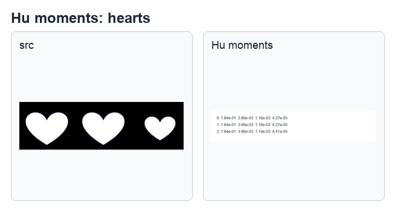
三颗心形轮廓的 Hu 矩接近，参考原书第 15-31 页。
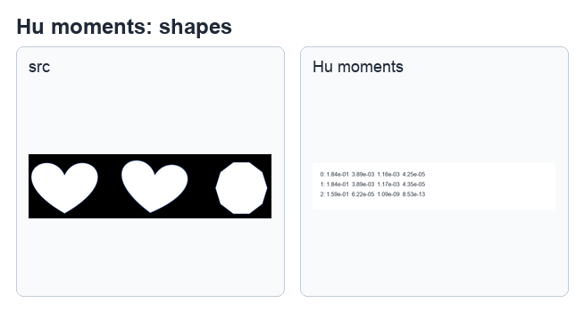
不同形状的 Hu 矩差异更明显，参考原书第 15-32 页。
15-6
再谈轮廓外形匹配
除了直接观察 Hu 矩，也可以使用 matchShapes() 直接比较两个轮廓，返回值越接近 0，外形越相似。
retval = cv2.matchShapes(contour1, contour2, method, parameter)
| method | 说明 |
|---|
cv2.CONTOURS_MATCH_I1 | 使用 Hu 矩计算差异。 |
cv2.CONTOURS_MATCH_I2 | 使用另一种 Hu 矩距离计算方式。 |
cv2.CONTOURS_MATCH_I3 | 使用最大相对差异。 |
程序实例 ch15_22.py：使用 matchShapes() 比较轮廓
# ch15_22.py
src = cv2.imread("myheart.jpg")
contours, hierarchy = cv2.findContours(dst_binary, cv2.RETR_EXTERNAL, cv2.CHAIN_APPROX_SIMPLE)
match0 = cv2.matchShapes(contours[0], contours[0], 1, 0)
print(f"轮廓0和0比较 = {match0}")
match1 = cv2.matchShapes(contours[0], contours[1], 1, 0)
print(f"轮廓0和1比较 = {match1}")
match2 = cv2.matchShapes(contours[0], contours[2], 1, 0)
print(f"轮廓0和2比较 = {match2}")
轮廓0和0比较 = 0.0
轮廓0和1比较 = 0.00046299603915214704
轮廓0和2比较 = 0.29307592277155203
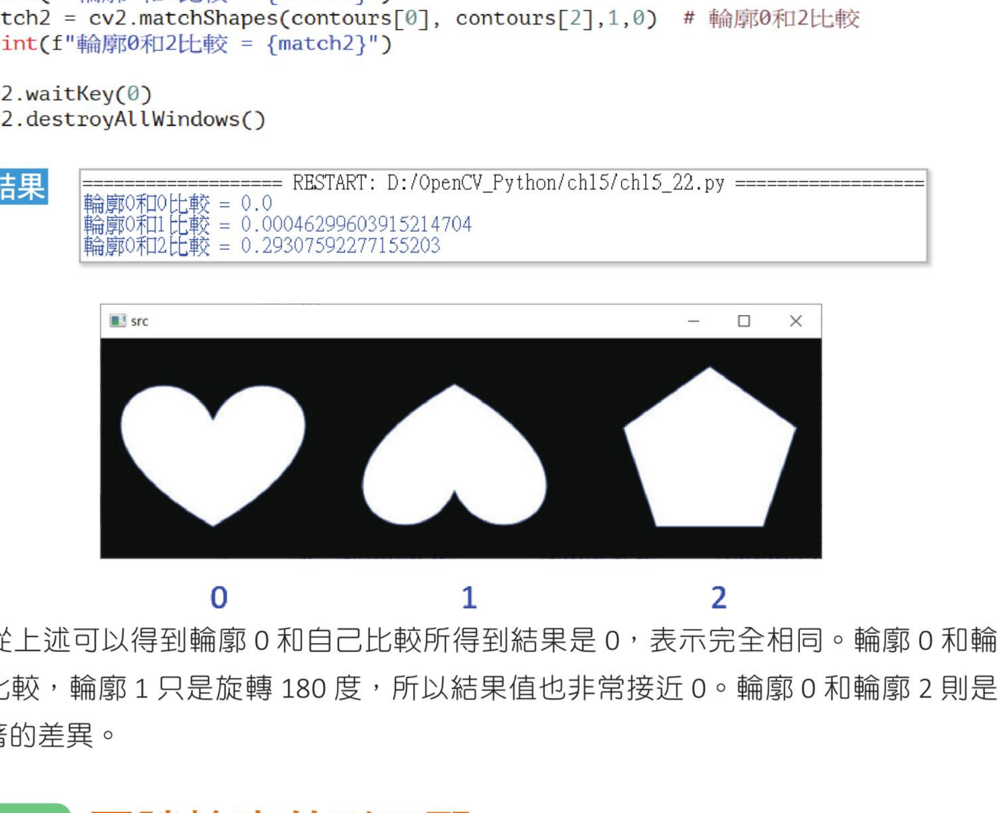
轮廓 0 与自己比较为 0；轮廓 1 只是旋转，结果接近 0；轮廓 2 差异较大，参考原书第 15-35 页。
OpenCV 还提供形状场景距离与 Hausdorff 距离。两者都属于形状比较方法，可用于进一步衡量轮廓相似度。
sd = cv2.createShapeContextDistanceExtractor()
distance = sd.computeDistance(contour1, contour2)
hd = cv2.createHausdorffDistanceExtractor()
distance = hd.computeDistance(contour1, contour2)
程序实例 ch15_23.py / ch15_24.py：Shape Context 与 Hausdorff 距离
# ch15_23.py
sc = cv2.createShapeContextDistanceExtractor()
distance = sc.computeDistance(contours[0], contours[1])
print(f"Shape Context distance = {distance}")
# ch15_24.py
hd = cv2.createHausdorffDistanceExtractor()
distance = hd.computeDistance(contours[0], contours[1])
print(f"Hausdorff distance = {distance}")
影像1和1比较 = 0.0
影像0和1比较 = 12.206555366516113
影像0和2比较 = 8.5440034866333
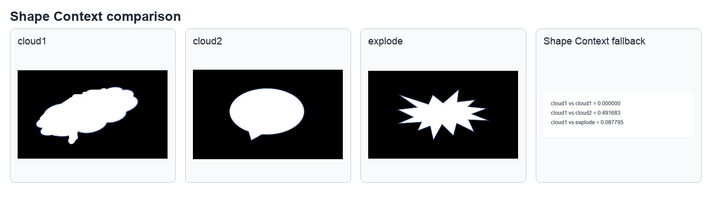
ch15_24.py 使用 Hausdorff 距离比较轮廓，相同影像距离为 0，形状越不同距离越大。
1. findContours() 用于找轮廓，输入影像必须是 8 位单通道二值影像。
2. drawContours() 会直接修改来源影像；如果要保留原图，应先使用 copy()。
3. hierarchy 的四个元素分别表示同层前后关系、子轮廓与父轮廓。
4. 影像矩、Hu 矩和形状距离都可用于轮廓特征与外形匹配。